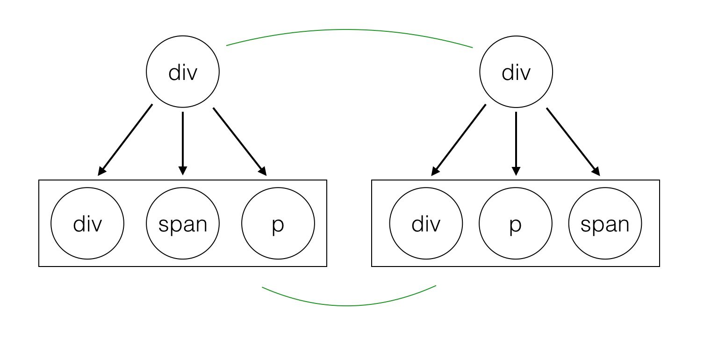
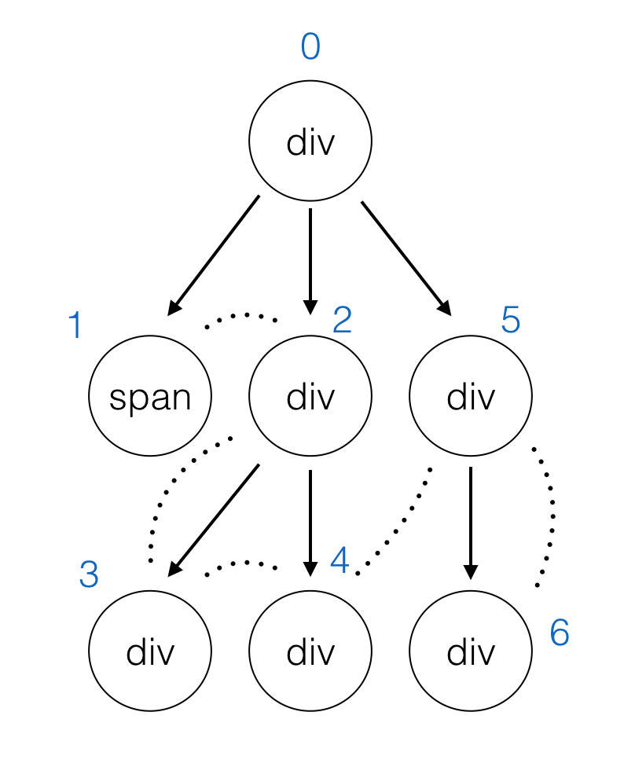

<!DOCTYPE html>
<html lang="en">

<!-- Head tag -->
<head>
    <meta charset="utf-8">
    <meta http-equiv="X-UA-Compatible" content="IE=edge">
    <meta name="google-site-verification" content="xBT4GhYoi5qRD5tr338pgPM5OWHHIDR6mNg1a3euekI" />
    <meta name="viewport" content="width=device-width, initial-scale=1">
    <meta name="description" content="">
    <meta name="keyword"  content="">
    <link rel="shortcut icon" href="/img/favicon.ico">

    <title>
        
          实现一个简单的 Virtual-dom - West2ers的博客 | West2ers&#39; Blog
        
    </title>

    <link rel="canonical" href="https://blog.w2fzu.com/2017/05/07/2017-05-07-virtual-dom-implementation/">

    <!-- Bootstrap Core CSS -->
    
<link rel="stylesheet" href="/css/bootstrap.min.css">


    <!-- Custom CSS -->
    
<link rel="stylesheet" href="/css/hux-blog.min.css">


    <!-- Pygments Highlight CSS -->
    
<link rel="stylesheet" href="/css/highlight.css">


    <!-- Custom Fonts -->
    <!-- <link href="http://maxcdn.bootstrapcdn.com/font-awesome/4.3.0/css/font-awesome.min.css" rel="stylesheet" type="text/css"> -->
    <!-- Hux change font-awesome CDN to qiniu -->
    <link href="https://cdn.staticfile.org/font-awesome/4.5.0/css/font-awesome.min.css" rel="stylesheet" type="text/css">


    <!-- Hux Delete, sad but pending in China
    <link href='http://fonts.googleapis.com/css?family=Lora:400,700,400italic,700italic' rel='stylesheet' type='text/css'>
    <link href='http://fonts.googleapis.com/css?family=Open+Sans:300italic,400italic,600italic,700italic,800italic,400,300,600,700,800' rel='stylesheet' type='text/
    css'>
    -->


    <!-- HTML5 Shim and Respond.js IE8 support of HTML5 elements and media queries -->
    <!-- WARNING: Respond.js doesn't work if you view the page via file:// -->
    <!--[if lt IE 9]>
        <script src="https://oss.maxcdn.com/libs/html5shiv/3.7.0/html5shiv.js"></script>
        <script src="https://oss.maxcdn.com/libs/respond.js/1.4.2/respond.min.js"></script>
    <![endif]-->

    <!-- ga & ba script hoook -->
    <script></script>
<meta name="generator" content="Hexo 5.4.0"></head>


<!-- hack iOS CSS :active style -->
<body ontouchstart="">

    <!-- Navigation -->
<nav class="navbar navbar-default navbar-custom navbar-fixed-top">
    <div class="container-fluid">
        <!-- Brand and toggle get grouped for better mobile display -->
        <div class="navbar-header page-scroll">
            <button type="button" class="navbar-toggle">
                <span class="sr-only">Toggle navigation</span>
                <span class="icon-bar"></span>
                <span class="icon-bar"></span>
                <span class="icon-bar"></span>
            </button>
            <a class="navbar-brand" href="/">West2ers&#39; Blog</a>
        </div>

        <!-- Collect the nav links, forms, and other content for toggling -->
        <!-- Known Issue, found by Hux:
            <nav>'s height woule be hold on by its content.
            so, when navbar scale out, the <nav> will cover tags.
            also mask any touch event of tags, unfortunately.
        -->
        <div id="huxblog_navbar">
            <div class="navbar-collapse">
                <ul class="nav navbar-nav navbar-right">
                    <li>
                        <a href="/">Home</a>
                    </li>

                    

                        
                    

                        
                        <li>
                            <a href="/about/">About</a>
                        </li>
                        
                    

                        
                        <li>
                            <a href="/archives/">Archives</a>
                        </li>
                        
                    

                        
                        <li>
                            <a href="/tags/">Tags</a>
                        </li>
                        
                    
                    
                </ul>
            </div>
        </div>
        <!-- /.navbar-collapse -->
    </div>
    <!-- /.container -->
</nav>
<script>
    // Drop Bootstarp low-performance Navbar
    // Use customize navbar with high-quality material design animation
    // in high-perf jank-free CSS3 implementation
    var $body   = document.body;
    var $toggle = document.querySelector('.navbar-toggle');
    var $navbar = document.querySelector('#huxblog_navbar');
    var $collapse = document.querySelector('.navbar-collapse');

    $toggle.addEventListener('click', handleMagic)
    function handleMagic(e){
        if ($navbar.className.indexOf('in') > 0) {
        // CLOSE
            $navbar.className = " ";
            // wait until animation end.
            setTimeout(function(){
                // prevent frequently toggle
                if($navbar.className.indexOf('in') < 0) {
                    $collapse.style.height = "0px"
                }
            },400)
        }else{
        // OPEN
            $collapse.style.height = "auto"
            $navbar.className += " in";
        }
    }
</script>


    <!-- Main Content -->
    
<!-- Image to hack wechat -->
<!--  -->
<!--  -->

<!-- Post Header -->
<style type="text/css">
    header.intro-header{
        background-image: url('/img/home-bg.jpg')
    }
</style>
<header class="intro-header" >
    <div class="container">
        <div class="row">
            <div class="col-lg-8 col-lg-offset-2 col-md-10 col-md-offset-1">
                <div class="post-heading">
                    <div class="tags">
                        
                          <a class="tag" href="/tags/#14级" title="14级">14级</a>
                        
                          <a class="tag" href="/tags/#Web" title="Web">Web</a>
                        
                    </div>
                    <h1>实现一个简单的 Virtual-dom</h1>
                    <h2 class="subheading"></h2>
                    <span class="meta">
                        Posted by Dreamacro on
                        2017-05-07
                    </span>
                </div>
            </div>
        </div>
    </div>
</header>

<!-- Post Content -->
<article>
    <div class="container">
        <div class="row">

    <!-- Post Container -->
            <div class="
                col-lg-8 col-lg-offset-2
                col-md-10 col-md-offset-1
                post-container">

                <h2 id="基本原理及相关步骤"><a href="#基本原理及相关步骤" class="headerlink" title="基本原理及相关步骤"></a>基本原理及相关步骤</h2><p>​   由于操作 DOM 的代价较大，手动维护 DOM 又过于麻烦，那么就需要有一套东西去降低这方面的复杂度，只需要去<strong>维护状态，就能更新相应的视图</strong>。</p>
<p>​   而 Virtual-dom 就是一套解决方案，由于我们一般只在意一个 HTML 元素的 <code>tag</code>、<code>attribute</code>、<code>children</code> 等部分，所以我们可以把 HTML 元素用一个 interface（Typescript） 表示出来</p>
<figure class="highlight typescript"><table><tr><td class="gutter"><pre><span class="line">1</span><br><span class="line">2</span><br><span class="line">3</span><br><span class="line">4</span><br><span class="line">5</span><br><span class="line">6</span><br><span class="line">7</span><br><span class="line">8</span><br><span class="line">9</span><br><span class="line">10</span><br><span class="line">11</span><br><span class="line">12</span><br><span class="line">13</span><br><span class="line">14</span><br></pre></td><td class="code"><pre><span class="line"><span class="keyword">type</span> Key = <span class="built_in">string</span> | <span class="built_in">number</span></span><br><span class="line"></span><br><span class="line"><span class="keyword">interface</span> Attr &#123;</span><br><span class="line">    [key: <span class="built_in">string</span>]: <span class="built_in">string</span></span><br><span class="line">&#125;</span><br><span class="line"></span><br><span class="line"><span class="keyword">interface</span> VNode &#123;</span><br><span class="line">    <span class="attr">sel</span>: <span class="built_in">string</span> | <span class="literal">undefined</span></span><br><span class="line">    <span class="attr">attr</span>: Attr</span><br><span class="line">    <span class="attr">key</span>: Key</span><br><span class="line">    <span class="attr">children</span>: VNode[]</span><br><span class="line">    <span class="attr">el</span>: Node | <span class="literal">undefined</span></span><br><span class="line">    text?: <span class="built_in">string</span></span><br><span class="line">&#125;</span><br></pre></td></tr></table></figure>

<p>这里 <code>sel</code> 为 <code>undefined</code> 时，节点为文本节点，也就是 <code>TextNode</code> ，<code>key</code> 用来表示节点唯一性。</p>
<p>​   当状态进行改变时，会生成一个新的 VNode 节点，这时我们需要一个 <code>diff</code> 算法，返回两个虚拟 DOM 的差异，也就是 <code>Patch</code> 。得到 <code>Patch</code> 之后，我们就可以直接修改原有的虚拟 DOM ，并做一些相应的修改。由于完全 diff 两个不同的虚拟 DOM 的时间复杂度比较大( O(n^3) )，所以我们的 <code>diff</code> 算法需要一个尽可能低的时间复杂度( O(n) )，<strong>以尽可能少的步骤去 Patch 这颗 DOM 树</strong>，具体算法之后再细说。</p>
<p>说到这里我们实现一个 Virtual-dom，需要实现这么一个流程，整个项目我会用 <code>Typescript</code> <del>练习</del>实现</p>
<figure class="highlight typescript"><table><tr><td class="gutter"><pre><span class="line">1</span><br><span class="line">2</span><br><span class="line">3</span><br><span class="line">4</span><br><span class="line">5</span><br><span class="line">6</span><br></pre></td><td class="code"><pre><span class="line"><span class="keyword">const</span> node = h(...)</span><br><span class="line">render(node) <span class="comment">// 渲染 dom</span></span><br><span class="line"></span><br><span class="line"><span class="keyword">const</span> newNode = h(...)</span><br><span class="line"><span class="keyword">const</span> df = diff(node, newNode)</span><br><span class="line">patch(node, df)</span><br></pre></td></tr></table></figure>

<h2 id="Typescript-及-Webpack-的配置"><a href="#Typescript-及-Webpack-的配置" class="headerlink" title="Typescript 及 Webpack 的配置"></a>Typescript 及 Webpack 的配置</h2><p>tsconfig.json</p>
<figure class="highlight json"><table><tr><td class="gutter"><pre><span class="line">1</span><br><span class="line">2</span><br><span class="line">3</span><br><span class="line">4</span><br><span class="line">5</span><br><span class="line">6</span><br><span class="line">7</span><br><span class="line">8</span><br></pre></td><td class="code"><pre><span class="line">&#123;</span><br><span class="line">    <span class="attr">&quot;compilerOptions&quot;</span>: &#123;</span><br><span class="line">        <span class="attr">&quot;target&quot;</span>: <span class="string">&quot;es2015&quot;</span>,</span><br><span class="line">        <span class="attr">&quot;module&quot;</span>: <span class="string">&quot;commonjs&quot;</span>,</span><br><span class="line">        <span class="attr">&quot;jsx&quot;</span>: <span class="string">&quot;react&quot;</span>,</span><br><span class="line">        <span class="attr">&quot;jsxFactory&quot;</span>: <span class="string">&quot;h&quot;</span></span><br><span class="line">    &#125;</span><br><span class="line">&#125;</span><br></pre></td></tr></table></figure>

<p>这里的 <code>jsxFactory</code> 和 <code>jsx</code> 属性是用来让 virtual-dom 兹次 jsx 的，把 <code>React.createElement</code> 替换成我们自己的 <code>h</code> 函数，当然 <code>h</code> 函数和 <code>React.createElement</code> 的参数也要一致。</p>
<p>webpack.config.js</p>
<figure class="highlight javascript"><table><tr><td class="gutter"><pre><span class="line">1</span><br><span class="line">2</span><br><span class="line">3</span><br><span class="line">4</span><br><span class="line">5</span><br><span class="line">6</span><br><span class="line">7</span><br><span class="line">8</span><br><span class="line">9</span><br><span class="line">10</span><br><span class="line">11</span><br><span class="line">12</span><br><span class="line">13</span><br><span class="line">14</span><br><span class="line">15</span><br><span class="line">16</span><br><span class="line">17</span><br><span class="line">18</span><br></pre></td><td class="code"><pre><span class="line"><span class="built_in">module</span>.exports = &#123;</span><br><span class="line">    <span class="attr">entry</span>: &#123;</span><br><span class="line">        <span class="attr">vd</span>: <span class="string">&#x27;./src/index.ts&#x27;</span>,</span><br><span class="line">        <span class="attr">example</span>: <span class="string">&#x27;./example/vd.ts&#x27;</span></span><br><span class="line">    &#125;,</span><br><span class="line">    <span class="attr">output</span>: &#123;</span><br><span class="line">        <span class="attr">filename</span>: <span class="string">&#x27;./dist/[name].js&#x27;</span>,</span><br><span class="line">    &#125;,</span><br><span class="line">    <span class="attr">devtool</span>: <span class="string">&#x27;source-map&#x27;</span>,</span><br><span class="line">    <span class="attr">resolve</span>: &#123;</span><br><span class="line">        <span class="attr">extensions</span>: [<span class="string">&#x27;.webpack.js&#x27;</span>, <span class="string">&#x27;.ts&#x27;</span>]</span><br><span class="line">    &#125;,</span><br><span class="line">    <span class="attr">module</span>: &#123;</span><br><span class="line">        <span class="attr">rules</span>: [</span><br><span class="line">            &#123; <span class="attr">test</span>: <span class="regexp">/\.tsx?$/</span>, loader: <span class="string">&#x27;awesome-typescript-loader&#x27;</span> &#125;</span><br><span class="line">        ]</span><br><span class="line">    &#125;</span><br><span class="line">&#125;</span><br></pre></td></tr></table></figure>

<p>这里 webpack 的主要作用是将 ts 文件打包成浏览器可以直接执行的 js 文件，这里设置了两个入口点，<code>example</code> 是示例用的。</p>
<h2 id="实现生成-VNode-的-h-函数"><a href="#实现生成-VNode-的-h-函数" class="headerlink" title="实现生成 VNode 的 h 函数"></a>实现生成 VNode 的 h 函数</h2><p>为了兼容 <code>jsx</code> ，我们需要实现一个参数和 <code>React.createElement</code> 参数一致的函数</p>
<figure class="highlight typescript"><table><tr><td class="gutter"><pre><span class="line">1</span><br><span class="line">2</span><br><span class="line">3</span><br><span class="line">4</span><br><span class="line">5</span><br><span class="line">6</span><br><span class="line">7</span><br><span class="line">8</span><br><span class="line">9</span><br><span class="line">10</span><br><span class="line">11</span><br><span class="line">12</span><br><span class="line">13</span><br><span class="line">14</span><br><span class="line">15</span><br><span class="line">16</span><br><span class="line">17</span><br><span class="line">18</span><br><span class="line">19</span><br><span class="line">20</span><br><span class="line">21</span><br><span class="line">22</span><br><span class="line">23</span><br><span class="line">24</span><br><span class="line">25</span><br><span class="line">26</span><br></pre></td><td class="code"><pre><span class="line"><span class="function"><span class="keyword">function</span> <span class="title">h</span> (<span class="params">sel: <span class="built_in">string</span>, attr: Attr | <span class="literal">null</span>, ...children: <span class="built_in">Array</span>&lt;<span class="built_in">string</span> | VNode&gt;</span>): <span class="title">VNode</span> </span>&#123;</span><br><span class="line">    <span class="comment">// jsx 中，对于没有属性的节点传入 null</span></span><br><span class="line">    <span class="keyword">if</span> (attr === <span class="literal">null</span>) &#123;</span><br><span class="line">        attr = &#123;&#125;</span><br><span class="line">    &#125;</span><br><span class="line"></span><br><span class="line">    <span class="comment">// 从 attr 中取出 key 没有的话设置为 tag 这里叫做 sel</span></span><br><span class="line">    <span class="keyword">const</span> key = attr.key || sel</span><br><span class="line">    <span class="keyword">delete</span> attr.key</span><br><span class="line"></span><br><span class="line">    <span class="comment">// jsx 能传入一个数组作为 children，我这里为了方便直接写了个 flat 函数去拍扁数组</span></span><br><span class="line">    <span class="comment">// 并且对于文本节点则生成一个 VNode 节点替换</span></span><br><span class="line">    children = flat(children).map(</span><br><span class="line">        <span class="function"><span class="params">c</span> =&gt;</span> util.isString(c)</span><br><span class="line">            ? &#123;<span class="attr">key</span>: c, <span class="attr">children</span>: [], <span class="attr">attr</span>: &#123;&#125;, <span class="attr">text</span>: c&#125;</span><br><span class="line">            : c</span><br><span class="line">    )</span><br><span class="line"></span><br><span class="line">    <span class="keyword">return</span> &#123;</span><br><span class="line">        sel,</span><br><span class="line">        attr,</span><br><span class="line">        <span class="attr">children</span>: children <span class="keyword">as</span> VNode[],</span><br><span class="line">        key,</span><br><span class="line">        <span class="attr">el</span>: <span class="literal">undefined</span></span><br><span class="line">    &#125;</span><br><span class="line">&#125;</span><br></pre></td></tr></table></figure>

<p>h 函数对 <code>jsx</code> 语法做了一些兼容，具体的 <code>jsx</code> 解析可以查看源码或者去 <a target="_blank" rel="noopener" href="https://babeljs.io/repl/">https://babeljs.io/repl/</a> 尝试</p>
<p>**NOTE: 这里使用 flat 处理兼容的方式其实是错误的，这里可能会造成在 diff 阶段 key 的重复。另外这里对 key 的默认处理不是很好，看了一下 React 的 key 实现，在取不到 key 时，用的是 index.toString(36) **</p>
<p><strong><a target="_blank" rel="noopener" href="https://github.com/facebook/react/blob/81336fd8ced2ff92648f87d9a46e5f1feef1a16e/src/isomorphic/children/traverseAllChildren.js">详细可以看这里</a></strong></p>
<h2 id="实现渲染函数-render"><a href="#实现渲染函数-render" class="headerlink" title="实现渲染函数 render"></a>实现渲染函数 render</h2><p>渲染函数的实现比较简单</p>
<figure class="highlight typescript"><table><tr><td class="gutter"><pre><span class="line">1</span><br><span class="line">2</span><br><span class="line">3</span><br><span class="line">4</span><br><span class="line">5</span><br><span class="line">6</span><br><span class="line">7</span><br><span class="line">8</span><br><span class="line">9</span><br><span class="line">10</span><br><span class="line">11</span><br><span class="line">12</span><br><span class="line">13</span><br><span class="line">14</span><br><span class="line">15</span><br><span class="line">16</span><br><span class="line">17</span><br><span class="line">18</span><br><span class="line">19</span><br><span class="line">20</span><br><span class="line">21</span><br><span class="line">22</span><br><span class="line">23</span><br><span class="line">24</span><br><span class="line">25</span><br><span class="line">26</span><br><span class="line">27</span><br><span class="line">28</span><br></pre></td><td class="code"><pre><span class="line"><span class="function"><span class="keyword">function</span> <span class="title">render</span> (<span class="params">vnode: VNode</span>): <span class="title">Node</span> </span>&#123;</span><br><span class="line">    <span class="comment">// 节点渲染过就直接返回</span></span><br><span class="line">    <span class="keyword">if</span> (vnode.el) &#123;</span><br><span class="line">        <span class="keyword">return</span> vnode.el</span><br><span class="line">    &#125;</span><br><span class="line"></span><br><span class="line">    <span class="comment">// TextNode 的处理</span></span><br><span class="line">    <span class="keyword">if</span> (vnode.sel === <span class="literal">undefined</span>) &#123;</span><br><span class="line">        <span class="keyword">const</span> textNode = DOMAPI.createTextNode(vnode.text.toString())</span><br><span class="line">        vnode.el = textNode</span><br><span class="line">        <span class="keyword">return</span> textNode</span><br><span class="line">    &#125;</span><br><span class="line"></span><br><span class="line">    <span class="keyword">const</span> el = DOMAPI.createElement(vnode.sel) <span class="keyword">as</span> HTMLElement</span><br><span class="line"></span><br><span class="line">    <span class="comment">// 属性赋值</span></span><br><span class="line">    <span class="keyword">const</span> attrs = <span class="built_in">Object</span>.keys(vnode.attr)</span><br><span class="line">    attrs.forEach(<span class="function"><span class="params">key</span> =&gt;</span> el.setAttribute(key, vnode.attr[key]))</span><br><span class="line"></span><br><span class="line">    <span class="comment">// 递归处理子元素</span></span><br><span class="line">    <span class="keyword">for</span> (<span class="keyword">let</span> child <span class="keyword">of</span> vnode.children) &#123;</span><br><span class="line">        el.appendChild(render(child))</span><br><span class="line">    &#125;</span><br><span class="line"></span><br><span class="line">    vnode.el = el</span><br><span class="line"></span><br><span class="line">    <span class="keyword">return</span> el</span><br><span class="line">&#125;</span><br></pre></td></tr></table></figure>

<p>这里要注意的是，如果存在 <code>vnode.el</code> 则直接返回，在之后的 <code>diff</code> 算法中，插入新 <code>vnode</code> 时要注意渲染一次。</p>
<h2 id="diff-算法"><a href="#diff-算法" class="headerlink" title="diff 算法"></a>diff 算法</h2><p>在前端当中，你很少会跨越层级地移动 DOM 元素。所以 diff 算法只会对同一个层级的元素进行对比</p>
<p></p>
<p>遍历 VNode 树时，使用的是 DFS (深度优先) 的方式，并记录下该树唯一的 <code>index</code> 值</p>


<p>DFS 的实现</p>
<figure class="highlight typescript"><table><tr><td class="gutter"><pre><span class="line">1</span><br><span class="line">2</span><br><span class="line">3</span><br><span class="line">4</span><br><span class="line">5</span><br><span class="line">6</span><br><span class="line">7</span><br></pre></td><td class="code"><pre><span class="line"><span class="function"><span class="keyword">function</span> <span class="title">dfs</span> (<span class="params">node: VNode, idx: Index</span>) </span>&#123;</span><br><span class="line">    idx.idx++</span><br><span class="line">    <span class="keyword">const</span> index = idx.idx</span><br><span class="line">    <span class="keyword">for</span> (<span class="keyword">let</span> child <span class="keyword">of</span> node.children) &#123;</span><br><span class="line">        dfs(child, idx)</span><br><span class="line">    &#125;</span><br><span class="line">&#125;</span><br></pre></td></tr></table></figure>

<h2 id="VNode-差异类型"><a href="#VNode-差异类型" class="headerlink" title="VNode 差异类型"></a>VNode 差异类型</h2><p>在两棵 VNode 树 diff 的过程中我们会遇到几种对 DOM 的几种操作，所以要先考虑会遇到哪些类型</p>
<p>我这里简单定义了三种可能遇到的类型 (当然也可以分得更加详细)</p>
<figure class="highlight typescript"><table><tr><td class="gutter"><pre><span class="line">1</span><br><span class="line">2</span><br><span class="line">3</span><br><span class="line">4</span><br><span class="line">5</span><br></pre></td><td class="code"><pre><span class="line"><span class="keyword">interface</span> Patch &#123;</span><br><span class="line">    <span class="attr">index</span>: <span class="built_in">number</span></span><br><span class="line">    <span class="attr">type</span>: <span class="string">&#x27;REPLACE&#x27;</span> | <span class="string">&#x27;PROPS&#x27;</span> | <span class="string">&#x27;REORDER&#x27;</span>,</span><br><span class="line">    <span class="attr">payload</span>: VNode | Attr | <span class="built_in">Object</span>[]</span><br><span class="line">&#125;</span><br></pre></td></tr></table></figure>

<ul>
<li><p>Replace</p>
<p>替换掉原来的节点</p>
</li>
<li><p>Props</p>
<p>修改了节点的属性</p>
</li>
<li><p>ReOrder</p>
<p>移动、删除、新增子节点</p>
</li>
</ul>
<p>其中 <code>ReOrder</code> ，也就是比较两个数组，得出从源数组转变为新数组步骤的算法，参考<del>抄</del>的是 <a target="_blank" rel="noopener" href="https://github.com/livoras/list-diff">list-diff</a> ，时间复杂度为 O(n)</p>
<p>示例</p>
<figure class="highlight javascript"><table><tr><td class="gutter"><pre><span class="line">1</span><br><span class="line">2</span><br><span class="line">3</span><br><span class="line">4</span><br><span class="line">5</span><br><span class="line">6</span><br><span class="line">7</span><br><span class="line">8</span><br><span class="line">9</span><br><span class="line">10</span><br><span class="line">11</span><br><span class="line">12</span><br><span class="line">13</span><br></pre></td><td class="code"><pre><span class="line"><span class="keyword">const</span> diff = <span class="built_in">require</span>(<span class="string">&quot;list-diff2&quot;</span>)</span><br><span class="line"><span class="keyword">const</span> oldList = [&#123;<span class="attr">id</span>: <span class="string">&quot;a&quot;</span>&#125;, &#123;<span class="attr">id</span>: <span class="string">&quot;b&quot;</span>&#125;, &#123;<span class="attr">id</span>: <span class="string">&quot;c&quot;</span>&#125;, &#123;<span class="attr">id</span>: <span class="string">&quot;d&quot;</span>&#125;, &#123;<span class="attr">id</span>: <span class="string">&quot;e&quot;</span>&#125;]</span><br><span class="line"><span class="keyword">const</span> newList = [&#123;<span class="attr">id</span>: <span class="string">&quot;c&quot;</span>&#125;, &#123;<span class="attr">id</span>: <span class="string">&quot;a&quot;</span>&#125;, &#123;<span class="attr">id</span>: <span class="string">&quot;b&quot;</span>&#125;, &#123;<span class="attr">id</span>: <span class="string">&quot;e&quot;</span>&#125;, &#123;<span class="attr">id</span>: <span class="string">&quot;f&quot;</span>&#125;]</span><br><span class="line"></span><br><span class="line"><span class="keyword">const</span> moves = diff(oldList, newList, <span class="string">&quot;id&quot;</span>)</span><br><span class="line"><span class="comment">// `moves` is a sequence of actions (remove or insert):</span></span><br><span class="line"><span class="comment">// type 0 is removing, type 1 is inserting</span></span><br><span class="line"><span class="comment">// moves: [</span></span><br><span class="line"><span class="comment">//   &#123;index: 3, type: 0&#125;,</span></span><br><span class="line"><span class="comment">//   &#123;index: 0, type: 1, item: &#123;id: &quot;c&quot;&#125;&#125;,</span></span><br><span class="line"><span class="comment">//   &#123;index: 3, type: 0&#125;,</span></span><br><span class="line"><span class="comment">//   &#123;index: 4, type: 1, item: &#123;id: &quot;f&quot;&#125;&#125;</span></span><br><span class="line"><span class="comment">//  ]</span></span><br></pre></td></tr></table></figure>

<p><strong>NOTE: 经过测试发现，当这个算法在处理具有重复 key 的数组时，对某些输入会产生错误的结果，所以要谨慎考虑 key 的默认值设置，避免造成同一个数组内具有相同的 key</strong></p>
<figure class="highlight typescript"><table><tr><td class="gutter"><pre><span class="line">1</span><br><span class="line">2</span><br><span class="line">3</span><br><span class="line">4</span><br><span class="line">5</span><br><span class="line">6</span><br><span class="line">7</span><br><span class="line">8</span><br><span class="line">9</span><br><span class="line">10</span><br><span class="line">11</span><br><span class="line">12</span><br><span class="line">13</span><br><span class="line">14</span><br><span class="line">15</span><br><span class="line">16</span><br><span class="line">17</span><br><span class="line">18</span><br><span class="line">19</span><br><span class="line">20</span><br><span class="line">21</span><br><span class="line">22</span><br><span class="line">23</span><br><span class="line">24</span><br><span class="line">25</span><br><span class="line">26</span><br><span class="line">27</span><br><span class="line">28</span><br><span class="line">29</span><br><span class="line">30</span><br><span class="line">31</span><br><span class="line">32</span><br><span class="line">33</span><br><span class="line">34</span><br><span class="line">35</span><br><span class="line">36</span><br><span class="line">37</span><br><span class="line">38</span><br><span class="line">39</span><br><span class="line">40</span><br><span class="line">41</span><br><span class="line">42</span><br><span class="line">43</span><br><span class="line">44</span><br><span class="line">45</span><br><span class="line">46</span><br><span class="line">47</span><br><span class="line">48</span><br><span class="line">49</span><br><span class="line">50</span><br><span class="line">51</span><br><span class="line">52</span><br><span class="line">53</span><br><span class="line">54</span><br><span class="line">55</span><br><span class="line">56</span><br><span class="line">57</span><br><span class="line">58</span><br><span class="line">59</span><br><span class="line">60</span><br><span class="line">61</span><br><span class="line">62</span><br><span class="line">63</span><br><span class="line">64</span><br><span class="line">65</span><br><span class="line">66</span><br><span class="line">67</span><br><span class="line">68</span><br><span class="line">69</span><br></pre></td><td class="code"><pre><span class="line"><span class="function"><span class="keyword">function</span> <span class="title">diff</span> (<span class="params">oldNode: VNode, newNode: VNode</span>): <span class="title">Patchs</span> </span>&#123;</span><br><span class="line">    <span class="keyword">const</span> patch: Patchs = &#123;&#125;</span><br><span class="line">    <span class="comment">// 使用引用的方法传入 index</span></span><br><span class="line">    <span class="keyword">const</span> idx: Index = &#123; <span class="attr">idx</span>: -<span class="number">1</span> &#125;</span><br><span class="line"></span><br><span class="line">    dfs(oldNode, newNode, idx, patch)</span><br><span class="line"></span><br><span class="line">    <span class="keyword">return</span> patch</span><br><span class="line">&#125;</span><br><span class="line"></span><br><span class="line"><span class="comment">// 当节点替换时，对其子元素也进行遍历，但不进行任何操作，传入 skip 为 true</span></span><br><span class="line"><span class="comment">// 一开始也想对 diff 的某些差异类型做剪枝操作，但没有成功，如果有好的方法请告诉我😳</span></span><br><span class="line"><span class="function"><span class="keyword">function</span> <span class="title">dfs</span> (<span class="params">oldNode: VNode, newNode: VNode, idx: Index, patch: Patchs, skip = <span class="literal">false</span></span>) </span>&#123;</span><br><span class="line">    idx.idx++</span><br><span class="line">    <span class="keyword">const</span> index = idx.idx</span><br><span class="line">    <span class="keyword">if</span> (skip) &#123;</span><br><span class="line">        <span class="keyword">for</span> (<span class="keyword">let</span> child <span class="keyword">of</span> oldNode.children) &#123;</span><br><span class="line">            dfs(child, <span class="literal">null</span>, idx, patch, <span class="literal">true</span>)</span><br><span class="line">        &#125;</span><br><span class="line">        <span class="keyword">return</span></span><br><span class="line">    &#125;</span><br><span class="line"></span><br><span class="line">    <span class="comment">// 不是同一个元素，记录下 Replace 类型</span></span><br><span class="line">    <span class="keyword">if</span> (!sameVNode(oldNode, newNode)) &#123;</span><br><span class="line">        patch[index] = [&#123;</span><br><span class="line">            <span class="attr">index</span>: index,</span><br><span class="line">            <span class="attr">type</span>: <span class="string">&#x27;REPLACE&#x27;</span>,</span><br><span class="line">            <span class="attr">payload</span>: newNode</span><br><span class="line">        &#125;]</span><br><span class="line">        <span class="keyword">for</span> (<span class="keyword">let</span> child <span class="keyword">of</span> oldNode.children) &#123;</span><br><span class="line">            dfs(child, <span class="literal">null</span>, idx, patch, <span class="literal">true</span>)</span><br><span class="line">        &#125;</span><br><span class="line">        <span class="keyword">return</span></span><br><span class="line">    &#125;</span><br><span class="line"></span><br><span class="line">    <span class="keyword">const</span> currentPatch = []</span><br><span class="line">    <span class="comment">// 参数不一样，记录类型</span></span><br><span class="line">    <span class="keyword">if</span> (!sameProps(oldNode.attr, newNode.attr)) &#123;</span><br><span class="line">        currentPatch.push(&#123;</span><br><span class="line">            <span class="attr">index</span>: index,</span><br><span class="line">            <span class="attr">type</span>: <span class="string">&#x27;PROPS&#x27;</span>,</span><br><span class="line">            <span class="attr">payload</span>: newNode.attr</span><br><span class="line">        &#125;)</span><br><span class="line">    &#125;</span><br><span class="line"></span><br><span class="line">    <span class="comment">// diff children 数组</span></span><br><span class="line">    <span class="keyword">const</span> childDiff = diffList(oldNode.children, newNode.children, <span class="string">&#x27;key&#x27;</span>)</span><br><span class="line"></span><br><span class="line">    <span class="keyword">if</span> (childDiff.moves.length) &#123;</span><br><span class="line">        currentPatch.push(&#123;</span><br><span class="line">            <span class="attr">index</span>: index,</span><br><span class="line">            <span class="attr">type</span>: <span class="string">&#x27;REORDER&#x27;</span>,</span><br><span class="line">            <span class="attr">payload</span>: childDiff.moves</span><br><span class="line">        &#125;)</span><br><span class="line">    &#125;</span><br><span class="line"></span><br><span class="line">    <span class="comment">// 对 children 进行跳过或遍历</span></span><br><span class="line">    <span class="keyword">for</span> (<span class="keyword">let</span> i = <span class="number">0</span>; i &lt; childDiff.children.length; i++) &#123;</span><br><span class="line">        <span class="keyword">const</span> oldChild = oldNode.children[i]</span><br><span class="line">        <span class="keyword">const</span> child = childDiff.children[i]</span><br><span class="line"></span><br><span class="line">        dfs(oldChild, child, idx, patch, !child)</span><br><span class="line">    &#125;</span><br><span class="line"></span><br><span class="line">    <span class="comment">// 写入 patch</span></span><br><span class="line">    <span class="keyword">if</span> (currentPatch.length) &#123;</span><br><span class="line">        patch[index] = currentPatch</span><br><span class="line">    &#125;</span><br><span class="line">&#125;</span><br></pre></td></tr></table></figure>

<h2 id="将差异-Patch-到-DOM-树"><a href="#将差异-Patch-到-DOM-树" class="headerlink" title="将差异 Patch 到 DOM 树"></a>将差异 Patch 到 DOM 树</h2><p>这里遍历的方法也是 DFS，但和上面用的不是同一个函数</p>
<figure class="highlight typescript"><table><tr><td class="gutter"><pre><span class="line">1</span><br><span class="line">2</span><br><span class="line">3</span><br><span class="line">4</span><br><span class="line">5</span><br><span class="line">6</span><br><span class="line">7</span><br><span class="line">8</span><br><span class="line">9</span><br><span class="line">10</span><br><span class="line">11</span><br><span class="line">12</span><br><span class="line">13</span><br><span class="line">14</span><br><span class="line">15</span><br><span class="line">16</span><br><span class="line">17</span><br><span class="line">18</span><br><span class="line">19</span><br><span class="line">20</span><br><span class="line">21</span><br><span class="line">22</span><br><span class="line">23</span><br><span class="line">24</span><br><span class="line">25</span><br><span class="line">26</span><br><span class="line">27</span><br><span class="line">28</span><br><span class="line">29</span><br><span class="line">30</span><br><span class="line">31</span><br><span class="line">32</span><br><span class="line">33</span><br><span class="line">34</span><br><span class="line">35</span><br><span class="line">36</span><br><span class="line">37</span><br><span class="line">38</span><br></pre></td><td class="code"><pre><span class="line"><span class="function"><span class="keyword">function</span> <span class="title">patch</span> (<span class="params">vnode: VNode, patchs: Patchs</span>) </span>&#123;</span><br><span class="line">    dfs (vnode, patchs, &#123; <span class="attr">idx</span>: -<span class="number">1</span> &#125;)</span><br><span class="line">&#125;</span><br><span class="line"></span><br><span class="line"><span class="function"><span class="keyword">function</span> <span class="title">dfs</span> (<span class="params">vnode: VNode, patchs: Patchs, index: Index</span>) </span>&#123;</span><br><span class="line">    index.idx++</span><br><span class="line"></span><br><span class="line">    <span class="keyword">if</span> (!vnode.el) &#123;</span><br><span class="line">        <span class="keyword">throw</span> <span class="keyword">new</span> <span class="built_in">Error</span>(<span class="string">&#x27;element not found&#x27;</span>)</span><br><span class="line">    &#125;</span><br><span class="line"></span><br><span class="line">    <span class="keyword">const</span> currPatch = patchs[index.idx]</span><br><span class="line">    <span class="comment">// 先对子元素进行 Patch，保证 Index 一致</span></span><br><span class="line">    dfsChild(vnode.children, patchs, index)</span><br><span class="line">    <span class="keyword">if</span> (!currPatch) &#123;</span><br><span class="line">        <span class="keyword">return</span></span><br><span class="line">    &#125;</span><br><span class="line">    <span class="keyword">for</span> (<span class="keyword">let</span> patch <span class="keyword">of</span> currPatch) &#123;</span><br><span class="line">        <span class="keyword">switch</span> (patch.type) &#123;</span><br><span class="line">            <span class="keyword">case</span> <span class="string">&quot;REPLACE&quot;</span>:</span><br><span class="line">                <span class="comment">// 替换操作</span></span><br><span class="line">                <span class="keyword">break</span></span><br><span class="line">            <span class="keyword">case</span> <span class="string">&quot;REORDER&quot;</span>:</span><br><span class="line">                <span class="comment">// 重排操作</span></span><br><span class="line">                <span class="keyword">break</span></span><br><span class="line">            <span class="keyword">case</span> <span class="string">&quot;PROPS&quot;</span>:</span><br><span class="line">                <span class="comment">// 修改属性操作</span></span><br><span class="line">                <span class="keyword">break</span></span><br><span class="line">        &#125;</span><br><span class="line">    &#125;</span><br><span class="line">&#125;</span><br><span class="line"></span><br><span class="line"><span class="function"><span class="keyword">function</span> <span class="title">dfsChild</span> (<span class="params">children: VNode[], patchs: Patchs, index: Index</span>) </span>&#123;</span><br><span class="line">    <span class="keyword">for</span> (<span class="keyword">let</span> child <span class="keyword">of</span> children) &#123;</span><br><span class="line">        dfs(child, patchs, index)</span><br><span class="line">    &#125;</span><br><span class="line">&#125;</span><br><span class="line"></span><br></pre></td></tr></table></figure>

<h2 id="简单应用"><a href="#简单应用" class="headerlink" title="简单应用"></a>简单应用</h2><p>这样一个简单的 virtual-dom 就实现了，写个 <code>example</code> ，顺便写个 vue-like 的数据驱动 demo</p>
<p><del>博客的 Markdown 似乎不支持 tsx</del></p>
<figure class="highlight typescript"><table><tr><td class="gutter"><pre><span class="line">1</span><br><span class="line">2</span><br><span class="line">3</span><br><span class="line">4</span><br><span class="line">5</span><br><span class="line">6</span><br><span class="line">7</span><br><span class="line">8</span><br><span class="line">9</span><br><span class="line">10</span><br><span class="line">11</span><br><span class="line">12</span><br><span class="line">13</span><br><span class="line">14</span><br><span class="line">15</span><br><span class="line">16</span><br><span class="line">17</span><br><span class="line">18</span><br><span class="line">19</span><br><span class="line">20</span><br><span class="line">21</span><br><span class="line">22</span><br><span class="line">23</span><br><span class="line">24</span><br><span class="line">25</span><br><span class="line">26</span><br><span class="line">27</span><br><span class="line">28</span><br><span class="line">29</span><br><span class="line">30</span><br><span class="line">31</span><br><span class="line">32</span><br><span class="line">33</span><br><span class="line">34</span><br><span class="line">35</span><br><span class="line">36</span><br><span class="line">37</span><br><span class="line">38</span><br><span class="line">39</span><br><span class="line">40</span><br><span class="line">41</span><br><span class="line">42</span><br><span class="line">43</span><br><span class="line">44</span><br><span class="line">45</span><br><span class="line">46</span><br><span class="line">47</span><br><span class="line">48</span><br><span class="line">49</span><br><span class="line">50</span><br><span class="line">51</span><br><span class="line">52</span><br><span class="line">53</span><br><span class="line">54</span><br><span class="line">55</span><br><span class="line">56</span><br><span class="line">57</span><br><span class="line">58</span><br><span class="line">59</span><br><span class="line">60</span><br><span class="line">61</span><br><span class="line">62</span><br><span class="line">63</span><br><span class="line">64</span><br><span class="line">65</span><br><span class="line">66</span><br><span class="line">67</span><br><span class="line">68</span><br></pre></td><td class="code"><pre><span class="line"><span class="keyword">import</span> &#123; render <span class="keyword">as</span> r, h, diff, patch, VNode &#125; <span class="keyword">from</span> <span class="string">&#x27;../src/index&#x27;</span></span><br><span class="line"></span><br><span class="line"><span class="keyword">interface</span> Config &#123;</span><br><span class="line">    <span class="attr">sel</span>: <span class="built_in">string</span></span><br><span class="line">    <span class="attr">data</span>: <span class="function">() =&gt;</span> <span class="built_in">Object</span>,</span><br><span class="line">    <span class="attr">render</span>: <span class="function">() =&gt;</span> VNode,</span><br><span class="line">    init?: <span class="function">() =&gt;</span> <span class="built_in">void</span></span><br><span class="line">&#125;</span><br><span class="line"></span><br><span class="line"><span class="function"><span class="keyword">function</span> <span class="title">DDRender</span> (<span class="params">&#123;data: dataFn, render, sel, init = <span class="keyword">function</span> () &#123;&#125;&#125;: Config</span>) </span>&#123;</span><br><span class="line">    <span class="keyword">const</span> data = dataFn()</span><br><span class="line">    <span class="built_in">this</span>.$data = <span class="built_in">Object</span>.create(<span class="literal">null</span>)</span><br><span class="line">    <span class="built_in">this</span>._genVNode = render.bind(<span class="built_in">this</span>.$data)</span><br><span class="line">    <span class="keyword">const</span> ctx = <span class="built_in">this</span></span><br><span class="line"></span><br><span class="line">    <span class="keyword">const</span> keys = <span class="built_in">Object</span>.keys(data)</span><br><span class="line">    <span class="built_in">Object</span>.defineProperties(</span><br><span class="line">        <span class="built_in">this</span>.$data,</span><br><span class="line">        keys.reduce(<span class="function">(<span class="params">obj, key</span>) =&gt;</span> &#123;</span><br><span class="line">            obj[key] = &#123;</span><br><span class="line">                get () &#123; <span class="keyword">return</span> data[key] &#125;,</span><br><span class="line">                set (val) &#123;</span><br><span class="line">                    data[key] = val</span><br><span class="line">                    ctx._reRender()</span><br><span class="line">                &#125;</span><br><span class="line">            &#125;</span><br><span class="line">            <span class="keyword">return</span> obj</span><br><span class="line">        &#125;, &#123;&#125;)</span><br><span class="line">    )</span><br><span class="line"></span><br><span class="line">    <span class="built_in">this</span>.$vnode = <span class="built_in">this</span>._genVNode()</span><br><span class="line">    <span class="built_in">this</span>.$el = r(<span class="built_in">this</span>.$vnode)</span><br><span class="line">    init.call(<span class="built_in">this</span>.$data)</span><br><span class="line">&#125;</span><br><span class="line"></span><br><span class="line">DDRender.prototype._reRender = <span class="function"><span class="keyword">function</span> (<span class="params"></span>) </span>&#123;</span><br><span class="line">    <span class="keyword">const</span> newVNode = <span class="built_in">this</span>._genVNode()</span><br><span class="line">    <span class="keyword">const</span> df = diff(<span class="built_in">this</span>.$vnode, newVNode)</span><br><span class="line">    patch(<span class="built_in">this</span>.$vnode, df)</span><br><span class="line">&#125;</span><br><span class="line"></span><br><span class="line"><span class="keyword">const</span> app = <span class="keyword">new</span> DDRender(&#123;</span><br><span class="line">    <span class="attr">sel</span>: <span class="string">&#x27;body&#x27;</span>,</span><br><span class="line">    data () &#123;</span><br><span class="line">        <span class="keyword">return</span> &#123;</span><br><span class="line">            <span class="attr">data</span>: []</span><br><span class="line">        &#125;</span><br><span class="line">    &#125;,</span><br><span class="line">    init () &#123;</span><br><span class="line">        <span class="keyword">let</span> count = <span class="number">0</span></span><br><span class="line">        <span class="keyword">const</span> data = [<span class="number">1</span>, <span class="number">4</span>, <span class="number">9</span>, <span class="number">16</span>]</span><br><span class="line">        <span class="built_in">setInterval</span>(<span class="function">() =&gt;</span> &#123;</span><br><span class="line">            <span class="built_in">this</span>.data = [count++, ...data].sort(<span class="function">(<span class="params">a, b</span>) =&gt;</span> a - b)</span><br><span class="line">        &#125;, <span class="number">1000</span>)</span><br><span class="line">    &#125;,</span><br><span class="line">    render () &#123;</span><br><span class="line">        <span class="keyword">const</span> lis = <span class="built_in">this</span>.data.map(</span><br><span class="line">            <span class="function">(<span class="params">v, i</span>) =&gt;</span> <span class="xml"><span class="tag">&lt;<span class="name">li</span> <span class="attr">key</span>=<span class="string">&#123;i.toString()&#125;</span>&gt;</span>&#123;v.toString()&#125;<span class="tag">&lt;/<span class="name">li</span>&gt;</span></span></span><br><span class="line">        )</span><br><span class="line">        <span class="keyword">return</span> (</span><br><span class="line">            <span class="xml"><span class="tag">&lt;<span class="name">ul</span>&gt;</span></span></span><br><span class="line"><span class="xml">                &#123; lis &#125;</span></span><br><span class="line"><span class="xml">            <span class="tag">&lt;/<span class="name">ul</span>&gt;</span></span></span><br><span class="line">        )</span><br><span class="line">    &#125;</span><br><span class="line">&#125;)</span><br><span class="line"></span><br><span class="line"><span class="built_in">document</span>.body.appendChild(app.$el)</span><br></pre></td></tr></table></figure>

<h2 id="结语"><a href="#结语" class="headerlink" title="结语"></a>结语</h2><p>其实这个 virtual-dom 的实现还有很多不完善的地方，等有空的时候再慢慢改了</p>
<p><a target="_blank" rel="noopener" href="https://github.com/Dreamacro/virtual-dom">完整代码参考</a> <del>当然点个 star 就更好了</del></p>


                <hr>

                

                <ul class="pager">
                    
                        <li class="previous">
                            <a href="/2017/05/31/2017-05-31-Java-pattern-23/" data-toggle="tooltip" data-placement="top" title="Java设计模式">&larr; Previous Post</a>
                        </li>
                    
                    
                        <li class="next">
                            <a href="/2017/05/02/2017-05-03-display-arrangement-mac/" data-toggle="tooltip" data-placement="top" title="使用CGBeginDisplayConfiguration切换 Mac 显示器排列">Next Post &rarr;</a>
                        </li>
                    
                </ul>

                

                
                <!-- disqus 评论框 start -->
                <div class="comment">
                    <div id="disqus_thread" class="disqus-thread"></div>
                </div>
                <!-- disqus 评论框 end -->
                

            </div>
    <!-- Side Catalog Container -->
        
            <div class="
                col-lg-2 col-lg-offset-0
                visible-lg-block
                sidebar-container
                catalog-container">
                <div class="side-catalog">
                    <hr class="hidden-sm hidden-xs">
                    <h5>
                        <a class="catalog-toggle" href="#">CATALOG</a>
                    </h5>
                    <ul class="catalog-body"></ul>
                </div>
            </div>
        

    <!-- Sidebar Container -->

            <div class="
                col-lg-8 col-lg-offset-2
                col-md-10 col-md-offset-1
                sidebar-container">

                <!-- Featured Tags -->
                
                <section>
                    <!-- no hr -->
                    <h5><a href="/tags/">FEATURED TAGS</a></h5>
                    <div class="tags">
                       
                          <a class="tag" href="/tags/#14级" title="14级">14级</a>
                        
                          <a class="tag" href="/tags/#Web" title="Web">Web</a>
                        
                    </div>
                </section>
                

                <!-- Friends Blog -->
                
                <hr>
                <h5>FRIENDS</h5>
                <ul class="list-inline">

                    
                        <li><a href="http://www.w2fzu.com" target="_blank">西二官网</a></li>
                    
                </ul>
                
            </div>

        </div>
    </div>
</article>


<!-- disqus 公共JS代码 start (一个网页只需插入一次) -->
<script type="text/javascript">
    /* * * CONFIGURATION VARIABLES * * */
    var disqus_shortname = "w2blog";
    var disqus_identifier = "https://blog.w2fzu.com/2017/05/07/2017-05-07-virtual-dom-implementation/";
    var disqus_url = "https://blog.w2fzu.com/2017/05/07/2017-05-07-virtual-dom-implementation/";

    (function() {
        var dsq = document.createElement('script'); dsq.type = 'text/javascript'; dsq.async = true;
        dsq.src = '//' + disqus_shortname + '.disqus.com/embed.js';
        (document.getElementsByTagName('head')[0] || document.getElementsByTagName('body')[0]).appendChild(dsq);
    })();
</script>
<!-- disqus 公共JS代码 end -->


<!-- async load function -->
<script>
    function async(u, c) {
      var d = document, t = 'script',
          o = d.createElement(t),
          s = d.getElementsByTagName(t)[0];
      o.src = u;
      if (c) { o.addEventListener('load', function (e) { c(null, e); }, false); }
      s.parentNode.insertBefore(o, s);
    }
</script>
<!-- anchor-js, Doc:http://bryanbraun.github.io/anchorjs/ -->
<script>
    async("//cdn.bootcss.com/anchor-js/1.1.1/anchor.min.js",function(){
        anchors.options = {
          visible: 'always',
          placement: 'right',
          icon: '#'
        };
        anchors.add().remove('.intro-header h1').remove('.subheading').remove('.sidebar-container h5');
    })
</script>
<style>
    /* place left on bigger screen */
    @media all and (min-width: 800px) {
        .anchorjs-link{
            position: absolute;
            left: -0.75em;
            font-size: 1.1em;
            margin-top : -0.1em;
        }
    }
</style>


    <!-- Footer -->
    <!-- Footer -->
<footer>
    <div class="container">
        <div class="row">
            <div class="col-lg-8 col-lg-offset-2 col-md-10 col-md-offset-1">
                <ul class="list-inline text-center">
                
                
                

                
                    <li>
                        <a target="_blank" href="https://weibo.com/west2gold">
                            <span class="fa-stack fa-lg">
                                <i class="fa fa-circle fa-stack-2x"></i>
                                <i class="fa fa-weibo fa-stack-1x fa-inverse"></i>
                            </span>
                        </a>
                    </li>
                

                

                

                

                </ul>
                <p class="copyright text-muted">
                    Copyright &copy; West2ers&#39; Blog 2023 
                    <br>
                    Theme by <a target="_blank" rel="noopener" href="https://huangxuan.me">Hux</a> 
                    <span style="display: inline-block; margin: 0 5px;">
                        <i class="fa fa-heart"></i>
                    </span> 
                    Ported by <a target="_blank" rel="noopener" href="http://blog.kaijun.rocks">Kaijun</a> | 
                    <iframe
                        style="margin-left: 2px; margin-bottom:-5px;"
                        frameborder="0" scrolling="0" width="91px" height="20px"
                        src="https://ghbtns.com/github-btn.html?user=kaijun&repo=hexo-theme-huxblog&type=star&count=true" >
                    </iframe>
                </p>
            </div>
        </div>
    </div>
</footer>

<!-- jQuery -->

<script src="/js/jquery.min.js"></script>


<!-- Bootstrap Core JavaScript -->

<script src="/js/bootstrap.min.js"></script>


<!-- Custom Theme JavaScript -->

<script src="/js/hux-blog.min.js"></script>


<!-- async load function -->
<script>
    function async(u, c) {
      var d = document, t = 'script',
          o = d.createElement(t),
          s = d.getElementsByTagName(t)[0];
      o.src = u;
      if (c) { o.addEventListener('load', function (e) { c(null, e); }, false); }
      s.parentNode.insertBefore(o, s);
    }
</script>

<!-- 
     Because of the native support for backtick-style fenced code blocks 
     right within the Markdown is landed in Github Pages, 
     From V1.6, There is no need for Highlight.js, 
     so Huxblog drops it officially.

     - https://github.com/blog/2100-github-pages-now-faster-and-simpler-with-jekyll-3-0  
     - https://help.github.com/articles/creating-and-highlighting-code-blocks/    
-->
<!--
    <script>
        async("http://cdn.bootcss.com/highlight.js/8.6/highlight.min.js", function(){
            hljs.initHighlightingOnLoad();
        })
    </script>
    <link href="http://cdn.bootcss.com/highlight.js/8.6/styles/github.min.css" rel="stylesheet">
-->


<!-- jquery.tagcloud.js -->
<script>
    // only load tagcloud.js in tag.html
    if($('#tag_cloud').length !== 0){
        async("https://blog.w2fzu.com/js/jquery.tagcloud.js",function(){
            $.fn.tagcloud.defaults = {
                //size: {start: 1, end: 1, unit: 'em'},
                color: {start: '#bbbbee', end: '#0085a1'},
            };
            $('#tag_cloud a').tagcloud();
        })
    }
</script>

<!--fastClick.js -->
<script>
    async("//cdn.bootcss.com/fastclick/1.0.6/fastclick.min.js", function(){
        var $nav = document.querySelector("nav");
        if($nav) FastClick.attach($nav);
    })
</script>


<!-- Google Analytics -->


<!-- Baidu Tongji -->


<!-- Side Catalog -->

<script type="text/javascript">
    function generateCatalog (selector) {
        var P = $('div.post-container'),a,n,t,l,i,c;
        a = P.find('h1,h2,h3,h4,h5,h6');
        a.each(function () {
            n = $(this).prop('tagName').toLowerCase();
            i = "#"+$(this).prop('id');
            t = $(this).text();
            c = $('<a href="'+i+'" rel="nofollow">'+t+'</a>');
            l = $('<li class="'+n+'_nav"></li>').append(c);
            $(selector).append(l);
        });
        return true;    
    }

    generateCatalog(".catalog-body");

    // toggle side catalog
    $(".catalog-toggle").click((function(e){
        e.preventDefault();
        $('.side-catalog').toggleClass("fold")
    }))

    /*
     * Doc: https://github.com/davist11/jQuery-One-Page-Nav
     * Fork by Hux to support padding
     */
    async("/js/jquery.nav.js", function () {
        $('.catalog-body').onePageNav({
            currentClass: "active",
            changeHash: !1,
            easing: "swing",
            filter: "",
            scrollSpeed: 700,
            scrollOffset: 0,
            scrollThreshold: .2,
            begin: null,
            end: null,
            scrollChange: null,
            padding: 80
        });
    });
</script>


<!-- Image to hack wechat -->

<!-- Migrate from head to bottom, no longer block render and still work -->

</body>

</html>
